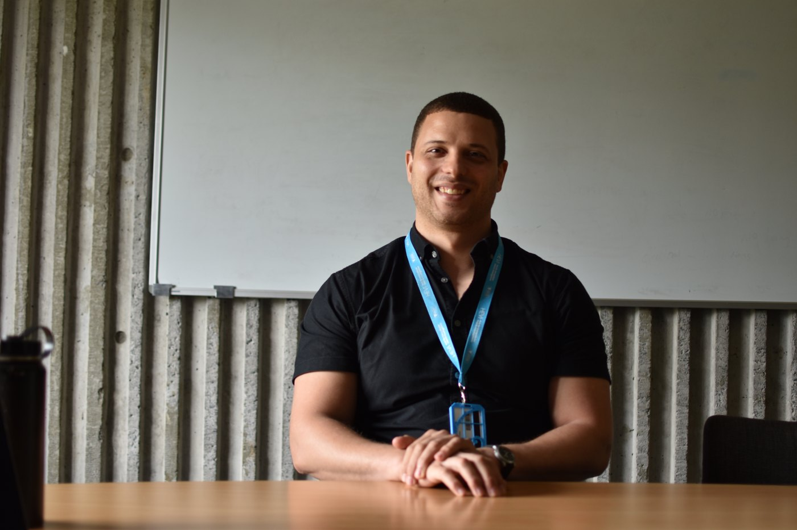

Archived first-person story
Colin Hisey
University of Auckland
2019 · 3 minute read

I didn’t study bioengineering as an undergrad. I studied chemical engineering, and actually, I did ChemE as a master’s student as well, although now I am just kind of an engineer, a problem solver.
For someone who had not traveled internationally, completing a Whitaker grant in the Basque Country in the North of Spain was definitely a culture shock. People would start speaking Spanish and then switch to Basque. I learned a lot about the Basque culture, way of life, food, and celebrations in the town.
Then, you go back to the States after living abroad for a year, and you get like reverse culture shock. I had to finish my PhD, making a lot less money and getting back into the lab, but from the time I got back. I was planning on leaving again. While digging through the internet and following obscure Facebook pages about extracellular vesicles, one of them posted a job and I applied on a whim. The interview went really well and I received an offer. I graduated August 3rd I believe, and was on a flight August 6th to Auckland.
I have been here about a year and its been great, I run a research hub called the Hub for Extracellular Vesicle investigations. We just call them EVs. My job is to train people and help them plan their experiments. We host symposia and have international speakers. On top of that I run my own research programs with students and fundings.
Right now my biggest project is a microfluidic biopsy platform. We’re trying to functionalize the inner surface of a microfluidic channel with an antibody that targets specific kinds of EVs. Then, we can capture them within the channel, release all the stuff we don’t care about, and then capture the EVs that we care about from the channel and perform some kind of downstream analysis.
Because the microfluidic chip is in flow, you get a much higher capture efficiency with regards to time. We have captured and found differences across different types of ovarian cancers using just 25 microliters of patient sample, and we think we can get even lower than that. It’s a nice alternative to circulating DNA.
Other projects include 3D bioprinting surface patterning of biomaterials, so I make little cancer cell race tracks. We also have some other liquid biopsy platforms using nanofibers.
I think having an international network is something a lot of people say they have, but it's hard to maintain if you don't actually know these people personally. Relationships you build every day last a lifetime, whereas networking through emails or conferences is not very sustainable. Having international recommendations is always really powerful for your portfolio in academia. I think seeing how other people do science is very valuable.
How do I make Auckland home? For me, I actually like to get out of Auckland and make New Zealand home. Auckland is a beautiful city, but the true beauty of New Zealand is within a half hour outside of the city and beyond. I try to leave on the weekends just to go to the beach, to go surfing, to see some waterfalls.
The most exciting thing to me in 3D bioprinting is combining it with microdevices. The technology for 3D printing is getting much cheaper and I think working on body-on-chip devices are where its at, especially for drug screening where we might have everything about the animal pathways that people currently use. Half the time it doesn't have any relevance to human tissue, but being able to print models on a chip and having different tissues on a chip and then combining that with fluidic systems, I think that’s where the field is going.